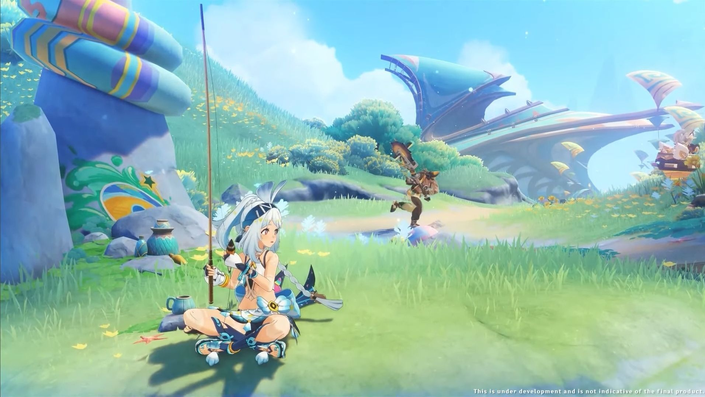
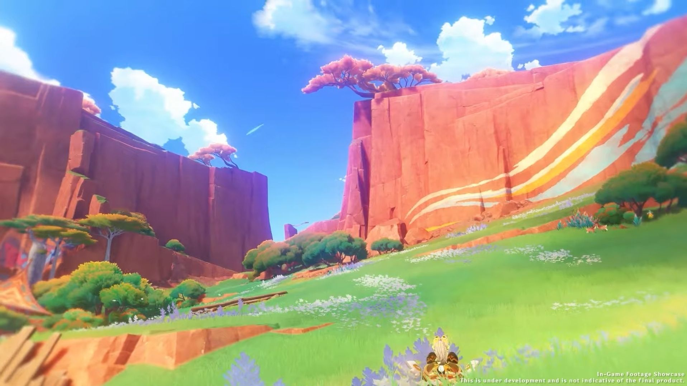
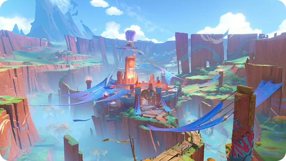
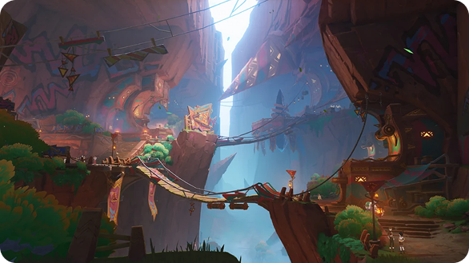
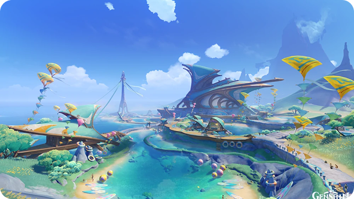

You crave exciting adventures and would choose an action-packed journey over a relaxing vacation.
"The Land of War and Warm Springs"
NATLAN
Duration: 4 days / 3 nights
16,500 PHP
per person
ABOUT NATLAN
Natlan, known as the Nation of War and Valor, is an energetic adventure destination where dramatic volcanic canyons meet therapeutic thermal springs. Renowned for its vibrant tribal heritage, colorful cliffside murals, and spirited competitions, it offers travelers an unforgettable blend of adrenaline and relaxation. From roaring stadium arenas to serene coastal hot springs, every region of Natlan pulses with warmth, rhythm, and pride.


You’ll enjoy this trip if...
You love sports, competitions, and activities that push your strength, courage, and endurance.
You thrive in energetic environments filled with music, celebrations, dancing, and passionate communities.
You are fascinated by powerful creatures, untamed wilderness, and nature at its most spectacular.
You admire determination, resilience, and the fiery spirit of people who face every challenge head-on.
YOUR STOPS
A closer look at the destinations waiting for you on this expedition.

TEPECAC STADIUM
Standing at the heart of Natlan's vibrant gatherings, Tepecac Stadium welcomes travelers with its towering stone tiers, colorful banners, and the blazing Sacred Flame at its center. Walk through the grand viewing galleries, admire intricate tribal stonework, and experience the electrifying energy of local competitions and festival dances. Surrounding plazas bustle with artisans, musicians, and food stalls serving smoky roasted specialties. Visiting Tepecac Stadium immerses you directly in Natlan's bold and welcoming culture.

CHILDREN OF THE ECHOES CANYON
Carved into towering ochre cliffs and sparkling mineral veins, the Children of the Echoes Canyon offers a striking landscape of natural acoustics and artisan workshops. Follow winding canyon trails, watch master gem-carvers shape vibrant crystals, and listen to rhythmic music echo naturally off the stone walls. Scenic overlooks along the upper ridges provide sweeping views of Natlan's rugged volcanic valleys below. Every turn in the canyon reveals a remarkable harmony between rugged terrain and creative craftsmanship.

PEOPLE OF THE SPRINGS BASIN
Set along a sun-drenched turquoise coastline fed by geothermal waters, the People of the Springs Basin is the ultimate destination for rest and rejuvenation. Soak in naturally heated mineral pools, stroll across wooden boardwalks over crystal-clear shallows, or relax beneath swaying tropical palms. As golden sunset hues reflect across the steaming pools and ocean waves, the entire basin transforms into a tranquil coastal sanctuary. It is the perfect retreat to unwind after days of canyon exploration.
INCLUSIONS
- 3 nights tribal lodge accommodation near Tepecac Stadium with daily breakfast
- Guided expeditions to Tepecac Stadium, Children of the Echoes Canyon, and People of the Springs basin
- Welcome Natlanese roasted feast platter and thermal hot spring access pass
- Regional tribal permits and licensed Tepecac Outpost branch tour guide
EXCLUSIONS
- Cross-border transit to and from Natlan
- Lunches, dinners, and specialty beverages not listed in the itinerary
- Personal souvenirs, extreme Saurian-riding (local companion creature) gear rentals, and travel insurance (required)
SAMPLE ITINERARY
DAY 1 - Arrival & Tepecac Stadium
Check-in at Tepecac Outpost, orientation briefing, afternoon tour of Tepecac Stadium and the Sacred Flame (ceremonial eternal fire) viewing gallery, and welcome roasted feast platter.
DAY 2 - Children of the Echoes Canyon
Morning canyon expedition into the mineral-rich cliffs of Children of the Echoes Canyon, guided tour of traditional gem-carving workshops, and afternoon acoustic cavern walk.
DAY 3 - People of the Springs Basin
Morning scenic transfer to the volcanic coast, guided tour of the People of the Springs basin, and afternoon relaxation in the therapeutic thermal hot springs.
DAY 4 - Tribal Market & Departure
Breakfast at the lodge, free morning to browse woven textiles and local crafts, and checkout.
READY TO EXPLORE NATLAN?
Base price: 16,500 PHP per person
Duration: 4 days / 3 nights
Package code: NATL-06

FREQUENTLY ASKED QUESTIONS
What should I wear for the Natlan tour?
Light, breathable athletic wear, sturdy hiking sandals or trail shoes for volcanic canyon terrain, and swimwear for the People of the Springs thermal hot springs.
What should I bring with me?
Bring your NATL-06 booking code, quick-dry towel, high-SPF sunscreen, sunglasses, a large water bottle for warm volcanic climates, and comfortable evening attire.
Is the tour suitable for families and children?
Yes! Families enjoy the vibrant atmosphere at Tepecac Stadium and the shallow thermal pools, though children must be supervised near canyon edges and hot spring vents.
How much walking is involved?
Moderate to active walking (3 to 4 hours daily) across stepped stadium tiers, canyon paths in Children of the Echoes Canyon, and coastal boardwalks.
Can I explore on my own during the trip?
Yes. You have free relaxation time on Day 3 afternoon at the People of the Springs resort and Day 4 morning at the tribal craft market.
Are there any rules or protocols I should follow during the tour?
Respect tribal customs and sacred obsidian totems (carved stone monuments), do not approach wild Saurians (local companion creatures) without a certified tribal handler, and follow posted temperature safety signs at all thermal hot springs.